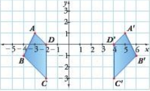

Simetría
Ejemplo
Explora y aprende con el ejemplo mostrado
Reflejar el triángulo cuyos vértices son A=(2,-1), b=(-3,4) y C=(0,5), a partir del eje de reflexión que pasa por los puntos D=(2,5) y E=(2,0) Primero, se traza el eje de reflexión por los puntos D=(2,5) y E=(2,0)
 Luego, se mide con el compás la distancia de cada vértice del triángulo al eje de reflexión y se
traslada cada medida al otro lado del eje, de tal forma que cada vértice y su respectiva imagen,
queden sobre la misma recta horizontal.
Luego, se mide con el compás la distancia de cada vértice del triángulo al eje de reflexión y se
traslada cada medida al otro lado del eje, de tal forma que cada vértice y su respectiva imagen,
queden sobre la misma recta horizontal.
 Finalmente, se tiene el triángulo de vértices A',B' y C' es la imagen reflejada del ∆ABC.
Finalmente, se tiene el triángulo de vértices A',B' y C' es la imagen reflejada del ∆ABC.
Conceptualización
Lee con atención
La reflexión es una transformación rígida en el plano que consiste en “dar media vuelta” a una figura a partir de una recta llamada eje de reflexión.
Actividades
¡La práctica hace al maestro!
Explica el procedimiento para encontrar el eje de reflexión a partir de la figura y de su imagen. Luego, traza el eje de reflexión.